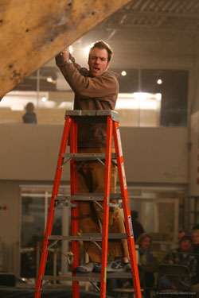

|
e-Grips Routesetting Interview: Chris Danielson 
How long have you been setting and climbing? About 13 years. I started climbing recreationally late in high school and began setting at a great school wall in college in Ohio in 1994. How did you learn? "Like most people I guess, I taught myself. I have always preferred to create my own movement rather than climb on others stuff (sometimes a bad thing..). Also, a guy named Tim Steele first helped me get started setting and provided a lot of motivation to get strong. I’ve learned a lot about different styles and comps from my routesetting friends - Mike Moelter, Jamie Emerson, and Scott Mechler." What do you most enjoy about setting? "Really, from the start I always liked routesetting as much as climbing itself, because for me climbing has always been about creating something. I’ve never had the level of dedication (or perhaps the strength) to develop new areas outside too much. I have a really short attention span. Though setting a new indoor route may not compare to finding, working, and completing an FA outside, it’s the closest thing to it for me, and that aspect of finding a new line from nothing is inspiring. Watching people climb your creations is an awesome experience that tells you a lot about your own movement and style, and their own." What makes a "good" routesetter? "Understanding movement and having a crazy imagination - you’ve got to have both. Also, being able to visualize climbing and accurately estimate difficulty is essential to become a strong and efficient setter at a gym or for comps." What do you think makes YOU a "good" routesetter? What would your friends say? "That’s a hard question but I guess put simplest, the answer would be attention to detail and understanding climbing movement. Intuition has a lot to do with the actual handhold selection and t-nut placement. But I also try hard at the less creative aspects, like efficiency and organization in managing routesetting, having solid relationships with the climbers who run my problems... I hope my friends would say that I’m good at finding the perfect handhold for a tweak - I love that process." Where have you, or do you, set? "I’ve worked at the Boulder Rock Club, Metrorock, and a handful of other gyms. Now I set for comps and often set as part of the consulting work that I do for climbing gyms that are starting up. This year I will have set at most of the major professional level bouldering comps in the US. I also try to do a few routesetting clinics every year." What are favorite events you’ve been a part of? "I’ve set for many ABS Regional and National comps, and a few big exhibition and pro level comps including the Teva Games, SLC Sendfest, the Northeastern Bouldering Championships. The big comps are always the most fun because you see the best climbers on your work, but I’ve also had some of the best times setting at a local woodie called the "Red Barn" in my hometown in Western NY." Do you have any favorite moves or problems that you’ve set? "I tried to force a feet first toe-hook with a crowd-facing cross through to an undercling at a lip on a Women’s Final. There was a lot of debate about it because it was hard to read... but ultimately we left it as is, and the few girls that used the best beta made the move look awesome. The problem was too hard in the end, but I love forcing crazy moves. I’ve also set a number of e-Grip sponsored problems in big comps, the favorite was an all Bubble Wrap Men’s Final at the SLC Sendfest II." What is your favorite e-Grips set? "The Hueco Patina Flakes are easily my favorite set of handholds on the market. The Myorcan Tufa themed sets and the Drop Art jug sets are also amazing." Favorite Unique Feature? "The Bubble Wrap, hands down." Finally, how would you describe what makes e-Grips handholds the best? "The combination of technical and aesthetic shape design is unparalleled. The guys who shape e-Grips have more experience combined than anyone in the climbing industry and are amazing artists." |